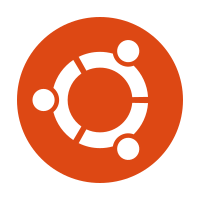
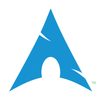

Linux Distributions
A Linux distribution (often abbreviated as distro) is an operating system made from a software collection, which is based upon the Linux kernel and, often, a package management system. Linux users usually obtain their operating system by downloading one of the Linux distributions, which are available for a wide variety of systems ranging from embedded devices (for example, OpenWrt) and personal computers (for example, Linux Mint) to powerful supercomputers (for example, Rocks Cluster Distribution).
Ubuntu

BEGINNER
Ubuntu has a very large userbase and community, as such it has a wealth of contributed support resources.
Linux Mint
BEGINNER
Linux Mint sports a community developed desktop with the aim of providing a more user-friendly option.
Elementary OS
BEGINNER
elementary puts design first to ensure that it is not compromising on quality, usability or speed.With a custom-built set of applications and desktop, elementary boasts a unique and cohesive experience.
Debian
INTERMEDIATE
As one of the oldest free software operating systems, Debian is very stable & reliable.
However its complex development cycle results in infrequent updates and a tendency to lag behind the competition.
OpenSuSE
INTERMEDIATE
openSUSE is a rather general purpose operating system, built with stability and interoperability in mind.
openSUSE also boasts its own comprehensive and acclaimed configuration & administration tools.
Fedora
INTERMEDIATE
Fedora has reputation for being cutting-edge and taking an innovative role with open source technologies.
However, being bleeding edge means each Fedora release is not supported for very long.
Arch Linux

ADVANCED
Arch Linux is lightweight & very customizable, however its installation process is definitely for an experienced user.
Arch's continuous update model can be taxing without the knowledge to fix any possible problems.
Gentoo
ADVANCED
Gentoo is a free operating system based on either Linux or FreeBSD that has extreme configurability, performance and a top-notch user and developer community.